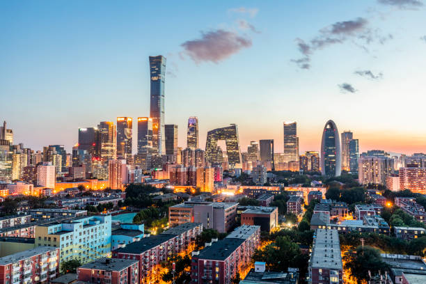

Modern Skyline 现代天际线
Glass towers mirror the amber sky. The old city grid dissolves into vertical rhythm — metal and light rising from ancient clay. Yet even here, beneath the shimmer of windows, the breath of the hutong lingers, unseen but steady.